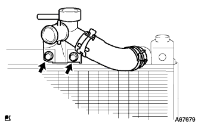

Radiator associated |
| 1. Radiator assertion |
Attach the Subradiator Support Kutsushion and Radiator Support LWR to the radiator associator.
|  |
With two bolts, attach the waterfilla.
 |
With three bolts, attach a fansy loud W/fan.
Attach a radiator asser to the vehicle and connect the connector and wire harness clamp of the cooling Juan motor.
| 2. Radiator support SUB-ASSY UPR installation |
Attach the radiator support UPR with four bolts and one clip.
Connect the horn asser connector and clamp.
| 3. Food rock support brace installation |
Attach the bonnet (food) rock support brace with four bolts.
| 4. Food rock support SUB-ASSY installation |
Attach the bonnet (food) rock support with three bolts.
| 5. Food lock ASSY installation |
Connect the Bonnettorotsuku Control Cable ASSY to the Bonnettorotsuku ASSY.
 |
With three bolts, tentatively attach Bonnetro Tsuku ASSY.
| 6. Radiator grill W/radiator support seal UPR installation |
Assemble radiator grill and radiator support seal UPR.
 |
Combine the claws at the bottom of the radiator grill and attach the radiator grill W/radiator support seal UPR with 6 clips.
| 7. Oil cooler outlet hole connection |
Connect an oil cooler outlet hole and attach a clamp.
| 8. Oil cool linelet hole connection |
Connect the oil cool line lettuce hose and attach the clamp.
| 9. Radiator outlet hole connection |
Connect the radiator outlet hot and attach the clamp.
| 10. Radiator inlet hole connection |
Connect the radiator inlet hose and attach the clamp.
| 11. Engine Anda cover RH installation |
With two screws and two bolts, install the engine undercover RH.
Tighten the nut.
| 12. Engine Anda cover LH installation |
With two screws and two bolts, install the engine undercover LH.
| 13. Cooling solution (Toyota genuine super LLC) replenishment |
Close the radiator drain kotsuku plug and injection of cooling water until overflowing from the radiator injection.[ * 1]
Tighten the radiator kayatsu.
Inject the cooling solution into the radiator reserve tank to the upper limit.
Warm up the engine until the thermostatsu opens.
Stop the engine, wait for the cooling solution to cool, remove the radiator kyatsu and check the water level.
If the water level is lowered, repeat from [ * 1].
When the water level does not fall, adjust the cooling solution of the radiator reservoir battank.
| 14. Cooling solution (Toyota genuine super LLC) leak inspection |
Fill the cooling solution and attach the tester.
137kPa {1.4kgf/cm2Put the pressure of｝ and confirm that there is no leak in each part.
| 15. Food SUB-ASSY adjustment |
 |
When adjusting the front end of the hood and the rear end left and right direction, loosen the bolt before performing it.
 |
When adjusting the upper and lower direction of the front end of the hood, adjust the left and right cushions to adjust.
 |
When adjusting the front, bottom, right, right, right of the hood, loosen the bolt before doing it.